CARVINGS & INTERIOR
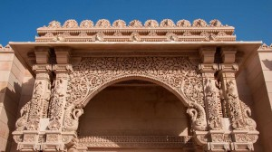
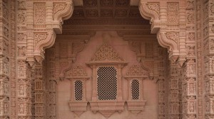
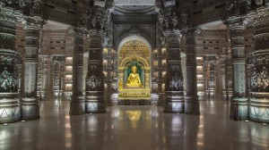
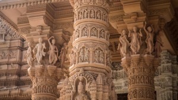
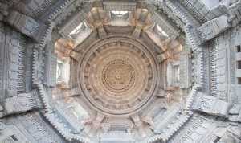
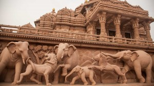
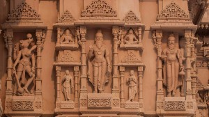
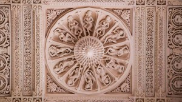
- MYTHS
- Miraculous Statue Movement: There are myths that the statues inside Akshardham Temple move on their own or change positions. However, these are baseless claims and there is no evidence to support them.
- Haunted by Spirits: Like many historical monuments, there are myths about Akshardham being haunted by spirits or supernatural beings. However, such claims lack substantiation and are likely products of imagination or folklore.
- Hidden Treasure: Some myths suggest that Akshardham Temple houses hidden treasures or secret chambers. However, the temple's design and construction have been thoroughly documented, and there is no indication of hidden treasures within the premises.
- Superhuman Powers of Deities: There are myths about the deities worshipped in Akshardham possessing superhuman powers or performing miracles. While devotees may attribute mystical qualities to the deities, such claims are not supported by empirical evidence.
- Curses and Blessings: It's sometimes believed that Akshardham Temple has the power to bestow blessings or curses upon visitors based on their intentions or actions. However, this notion is based on superstition rather than reality.
GARDEN
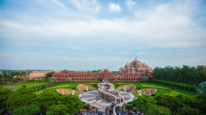
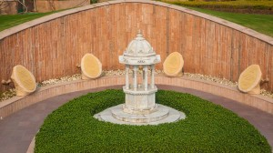
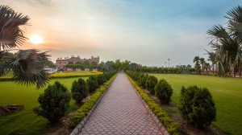
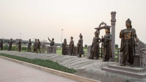
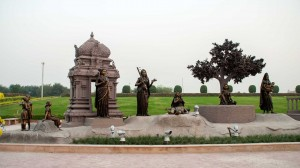
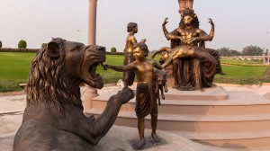
- FACTS
- Architectural Marvel: Akshardham Temple is a stunning architectural masterpiece, showcasing traditional Hindu craftsmanship and architectural styles. It is renowned for its intricate carvings, majestic domes, and sprawling courtyards.
- Spiritual Center: Akshardham Temple serves as a major spiritual and cultural center for the Swaminarayan sect of Hinduism. It attracts devotees and tourists from around the world who come to admire its beauty and seek spiritual solace.
- Cultural Exhibitions: In addition to the temple, Akshardham complex features cultural exhibitions, showcasing the rich heritage and values of Hinduism. These exhibitions educate visitors about Indian history, spirituality, and culture in an interactive and engaging manner.
- Gardens and Water Features: The Akshardham complex includes beautifully landscaped gardens, serene water bodies, and ornate fountains, creating a tranquil and peaceful atmosphere for visitors to relax and rejuvenate.
- Devotional Practices: Visitors to Akshardham Temple can participate in various devotional practices, including prayer sessions, meditation, and rituals, to experience spiritual upliftment and inner peace. The temple provides a sacred space for devotees to connect with the divine and deepen their faith.